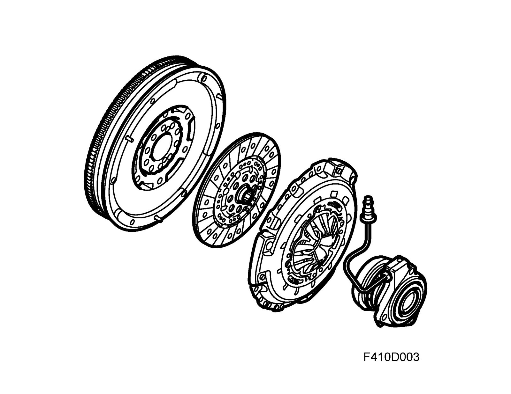
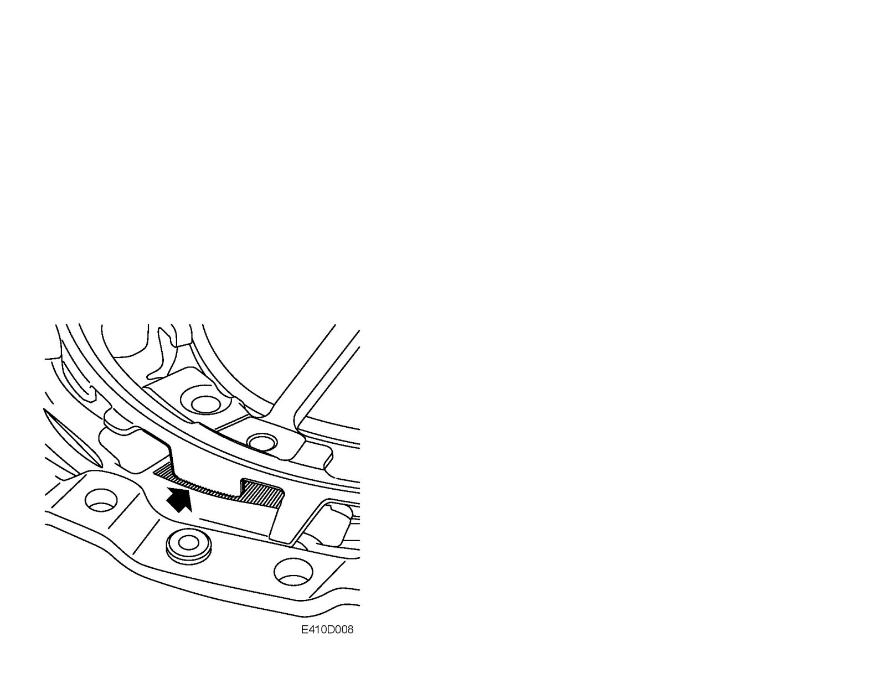
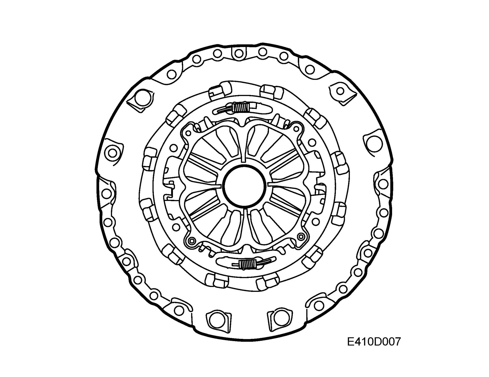

Clutch
Clutch
Power is transmitted from the flywheel on the engine to the input shaft in the gearbox via a driven plate. This power is transmitted by the pressure plate, which is bolted to the flywheel, forcing the friction surface of the driven plate against the flywheel.
The driven plate is joined to the primary shaft with a splined joint. When the release bearing on the slave cylinder presses on the "fingers" of the diaphragm spring, the fingers will act like levers to release the clamping force of the pressure plate from the driven plate-flywheel. The engine is disengaged from the transmission in this way.

Together with the dual-mass flywheel there is also a new driven plate hub and a new pressure plate. The pressure plate is of a new fully self-adjusting type, which means that the pressure springs against which the release bearing presses are always in the same position relative the release bearing. The pressure springs (diaphragm spring) can move between an adjusting ring and a wear ring. When wear occurs on the driven plate lining, the wear ring with pressure surface will move to the pressure plate. This movement reduces the load on the adjusting ring so that it can be turned by two small springs and self-adjust via a ratchet heel in the pressure plate housing.

This allows the pressure spring to retain its original position, providing several advantages such as
- Constant pedal application force irrespective of driven plate wear
- Longer service life of driven plate and pressure plate
- Lower pedal force required
This new concept means that the pressure plate and driven plate hub must always be changed in one unit.